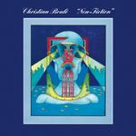

| Artist: | Christian Boule |
| Title: | Non-Fiction |
| Label: | Musea FGBG 4350 |
| Length(s): | 44 minutes |
| Year(s) of release: | 2002 |
| Month of review: | [08/2002] |
| 1) | Non-fiction | 4.08 |
| 2) | Chance | 4.19 |
| 3) | Psychedelik | 4.24 |
| 4) | Magic Fanfare | 5.02 |
| 5) | L.I.F.E. | 3.51 |
| 6) | Glissader Aquarian | 4.07 |
| 7) | Viva Da New Sound | 8.50 |
| 8) | Synthetic Lover | 4.51 |
| 9) | City Clone | 4.54 |
Chance is clearly a song from the disco period, with bompy basses, wah wah guitar and high pitched voices. Interesting. Quite interesting.
Psychedelik shows more clearly what Boule is about: whirling guitaring, sounding pretty spacy, with some melodic bits and some technical bits.
Magic Fanfare reminds me of that Chic bass player, was it Nile Rodgers? The humpa, Boule's space guitar and Slatin's vocals make it clear though that this is not a Chic song.
The use of clear sounding electronics reminds me on the one hand of Eloy, on the other of Air (who are pretty retro, after all). Slatin's voice fits in perfectly with this track, undoubtedly the best so far, since it manages to balance experiment with melody.
Glissader Aquarian is an instrumental track, pretty jazzy, bassed on bass and what sounds like a clarinet, but since that's not listed, it might be a soprano sax. Pretty tranquil stuff, moving nicely along.
Viva Da New Sound as its title might suggest is in a way a long some improvised sounding track which experiments with different influences, among which jazz and funk. Vocals are omitted in favour of chanting. Pretty okay overall result.
The first bonus track is more space directed, Blake clearly making himself heard as far as that goes on Synthetic Lover.
City Clone is more experimental than its predecessing bonus, but stays away from the wah-wahs and bob-bobs, still oddball enough though, in a nice way.